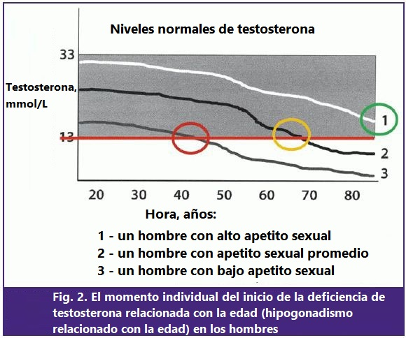

Una joven uróloga contó cómo logra recuperar la potencia en hombres de 60 a 70 años
A pesar de su edad, la joven doctora del Instituto de Urología, María Luisa Calle, trabaja incluso mejor que los profesionales conocidos en todo el país. A esta doctora se le hace una lista de espera grandísima de hombres cada mes. La médica joven se especializa en ayudar a recuperar la potencia ausente después de 50 años.
Nuestro corresponsal logró entrevistar a la mejor médica-uróloga de la clínica de urología del Instituto de Urología: María Luisa Calle.
María Luisa Calle, uróloga, doctora de la máxima categoría y profesora asistente de urología, nos contó sobre el tratamiento moderno de la impotencia en la principal universidad médica del país.- María, a tu consulta acuden los hombres de 60 y 70 años. ¿Es necesario tener sexo a esta edad?
-Claro que sí. Especialmente a los hombres. De esto depende directamente la salud y la rapidez con que llegará la vejez.
¡La falta de sexo es extremadamente dañina tanto a los 30 años como a los 40, a los 50 y a los 70! La próstata es el órgano en el que se produceт fluidos seminales. Deben ser consumidos. Si no se consumen, literalmente comienzan a deteriorarse. En la próstata empieza el proceso de la congestión patológica (se acumulan grupos de microorganismos peligrosos). Conducen a la inflamación de la próstata (prostatitis). La glándula prostática inflamada durante mucho tiempo lleva a un adenoma, dificultad para orinar y pielonefritis. La siguiente etapa después del adenoma será el cáncer de próstata. En aquellos que tienen problemas de potencia, el cáncer de próstata ocurre 7 veces más a menudo que en hombres sanos.
Y esto es sólo una de las consecuencias peligrosas. Hay muchas más. Se puede decir que la falta de sexo prolongada resulta en realidad en una muerte fulminante. Porque todo el cuerpo humano está diseñado para reproducir la descendencia. Cuando esta función se desvanece, el cuerpo comienza a envejecer muy rápidamente. Los vasos sanguíneos se ponen finos y estallan, aumenta el riesgo de infarto y accidente cerebrovascular, aparecen trastornos del sistema psicosomático. El hombre se vuelve canoso rápidamente (si no se ha vuelto canoso antes). Las articulaciones comienzan a doler, la postura se deteriora. Incluso el insomnio que atormenta a las personas mayores está relacionado con la falta de sexo y la falta de producción de varias hormonas.
Quiero mostrar algunas fotos de lo que sucede con el sistema genitourinario y otros órganos internos de un hombre cuando deja de tener sexo.
Así es como se ve la inflamación de la próstata debido a la congestión (sin no se vacían los testículos). La inflamación prolongada conduce primero al adenoma y luego al cáncer de próstata (del cual muere estadísticamente el 38% de los hombres). En ausencia de sexo siempre ocurre, por lo que el adenoma se considera una enfermedad de los ancianos.
Debido a la congestión, aparecen depósitos de colesterol en los vasos que pueden formar coágulos de sangre. Un coágulo de sangre supone una alta probabilidad de infarto o accidente cerebrovascular. Fue el infarto el que mató al hombre cuyo corazón se puede ver en la foto.
¿Sigues pensando que no hace falta tener sexo? Además, la capacidad de tener sexo también asegura las relaciones estables. Desafortunadamente, hay demasiados casos cuando un hombre después de empezar a tener problemas con la potencia se queda solo. Las mujeres pueden tener sexo hasta los 70-80 años. Ellas también lo necesitan. En general, la regla es la siguiente: cuanto más tiempo tengan sexo los cónyuges, más tiempo vivirán.
- Dicen que en la clínica usas medicamentos únicos para recuperar la potencia, los que pueden devolver la alegría del sexo a los hombres a cualquier edad. ¿Es cierto?
- Nuestra clínica siempre ha sido famosa por un alto porcentaje de curación de diversas enfermedades. Dado que somos una subdivisión estructural de una de las principales instituciones del país, a menudo utilizamos medicamentos únicos desarrollados por nuestros científicos. Si hablamos de los problemas sexuales en los hombres, entonces, sí, tenemos un remedio especial desarrollado en nuestra universidad, se llama "".
"" no solo aumenta la excitación inmediatamente después de la ingesta (se puede usarlo como un agente excitador análogo seguro de viagra), sino que también con la ingesta regular recupera la potencia natural. No existe medicamentos parecidos en ningún otro lugar y no se vende en farmacias.
- ¿Podrías contarnos más sobre la efectividad de este remedio?
- El producto es realmente muy bueno. Esto se evidencia al menos por el hecho de que los pacientes piden una cita conmigo con varias semanas de anticipación. Al mismo tiempo, no hago nada especial: solo prescribo este medicamento, después de lo cual se puede comprarlo en la farmacia de nuestro centro o ganarlo en un sorteo. .
Hablando de la efectividad de , quiero mostrar los resultados de los estudios clínicos realizados en nuestro centro en 2018-2019. En total participaron unos 400 hombres mayores de 50 años. Muchos de los sujetos no habían tenido potencia durante varios años.
Resultados del estudio:
- Recuperación completa de la potencia (se hizo posible tener sexo al menos una vez a la semana): 96% de los sujetos
- Aumento de los niveles de testosterona: 94% de los sujetos
- Normalización de la micción (incluido el número de impulsos): el 98% de los sujetos
- Mejora del bienestar general: 99% de los sujetos
- Ningún efecto secundario: 100% de los sujetos
Es decir, es realmente un muy buen remedio.
Un mecanismo innovador del efecto en el sistema genitourinario en los hombres.
Decidimos conocer los detalles del efecto de "" en el sistema genitourinario en los hombres haciendo preguntas a uno de los creadores del medicamento: médico emérito de México, catedrático, urólogo jefe del Ministerio de Sanidad, Consumo y Bienestar Social, urólogo jefe de México, miembro del Centro, presidente honorario del Departamento de Urología Jaime Aparicio.
"No entiendo en absoluto a aquellos hombres que a la edad de 50-60 años terminan la vida sexual con la cabeza inclinada y decisión de que no se puede hacer nada. ¿Por qué? ¡Cuando puedes divertirte y disfrutar la vida hasta la vejez!"- Jaime, ¿por qué "" ayuda a combatir la disfunción eréctil de manera tan efectiva a los 60-70 años? ¿Cuál es su mecanismo de acción?
La causa principal de la mala potencia es la falta de testosterona. Es a este problema que está dirigida la acción de "".
La testosterona es, de hecho, una hormona masculina de la excitación. Cuanto mayor es, más un hombre tiene las ganas de las mujeres y más fuerte es su potencia. El pico en la producción de testosterona es a la edad de 18-22 años. Luego su producción comienza a disminuir, primero lentamente y luego más rápido. En consecuencia, cuando el nivel de testosterona se vuelve bajo, la potencia desaparece y el cuerpo comienza a envejecer.
 La disminución de los niveles de testosterona ocurre en todos los hombres: en unos casos más rápido, en otros más lento. Cuando el nivel de testosterona es inferior a 13 nmol/l, la potencia desaparece por completo..
Además de la vejez, la producción de testosterona está influenciada por factores externos: malos hábitos, alimentos poco saludables, ecología dañina (por ejemplo, si una persona trabaja en una producción dañina) y muchos otros.
Todo esto conduce a una disminución acelerada de los niveles de testosterona y, como resultado, a una aparición más temprana de disfunción eréctil.
Comprueba si tu producción de testosterona es insuficiente por los siguientes síntomas:
- Falta constante de energía
- Debilidad muscular
- Dolores de cabeza frecuentes
- Problemas estomacales
- Deseo constante de dormir
- Falta de deseo sexual
- Reflejos retardados
- Trastornos de la memoria
- Saltos de presión
- Flacidez de los músculos y la piel
- Apatía e irritabilidad
- Alopecia
- Problemas de salud frecuentes
Tener al menos 2 de estos síntomas indica que tu nivel de testosterona es bajo. Necesita ser incrementado. Entonces la potencia se recuperará.
"" recupera perfectamente la producción de la hormona testosterona. Actúa directamente sobre las células de Leydig de los testículos en los hombres, lo que lleva a la normalización de su función como si tuvieras 20-30 años. Como resultado, la potencia se recupera y el cuerpo se rejuvenece.
Como ya he dicho, muchos de los que pensaron que ya nunca más podrían tener sexo, lo tienen después de 3-4 semanas de tomar el curso de "". Hay que tomarlo todos los días. Las primeras mejoras se notan en unos pocos días. El medicamento no solo devuelve la potencia, sino que también tiene un efecto positivo en todo el cuerpo de un hombre, porque la testosterona es la principal hormona masculina.
¿Es este el remedio que quieren sortear?
Exacto. A todos los hombres que quieren intentar recuperar la potencia. Ahora tenemos aproximadamente 1000 paquetes en stock, nosotros (mis colegas y yo) los enviaremos a los primeros en participar en el sorteo..
"" es completamente natural: contiene extractos altamente concentrados de las plantas más útiles para los hombres, traídas de todo el mundo. Por lo tanto, se puede tomarlo sin acudir al médico, en casa.
A diferencia de Viagra, recupera el deseo y la potencia sexual natural, es decir, aquellos que aparecen por sí solos sin el uso de estimulantes.
¿Qué se necesita para ganar ""?
- 1. Estar en el territorio de México.
- 2. Participar en el sorteo..
- 3. Después de 5-7 días (tiempo de entrega) obtener el medicamento.
¿ realmente ayuda a recuperar la potencia en la vejez? Resultados de la encuesta
En el sitio web del Instituto de Urología de México (fue este Instituto el que desarrolló "") ahora se realiza una encuesta entre quienes usaron "".
Comentarios
Felipe
Gané "". Muchas gracias. Me prometieron que en cinco días podré recibir el paquete.
Nacho
También participé en el sorteo y gané. Desde hace un año no he podido hacer ESTO, pero no quiero terminar mi vida sexual. Realmente espero que "" me ayude. No puedo tomar Viagra por las contraindicaciones: mi corazón está mal.
Carlos
¡Totalmente confirmado! es un gran producto. Tengo 54 años. Ya casi no tengo erección. Muy raramente He probado muchas cosas para recuperarla. Recetas populares, pastillas, fui al urólogo muchas veces. Lo único que me ayudó fue este fármaco. Ahora tengo sexo una vez a la semana, fijo. Además, la salud ha mejorado gracias a que la testosterona es muy útil para el cuerpo masculino
José
Me siento mucho mas recuperado , mi estado de animo se levanto al ver la efectividad de !!
Hugo
Lo pedí. Todavía esta disponible para Pedirlo. La entrega es por correo ordinario. Nunca pedí nada en Internet, pero resultó ser fácil. Todo lo que necesitas es dejar tu número de teléfono. Luego el gerente me devolvió la llamada y me preguntó a qué dirección entregar el artículo.
Elías
Leí los detalles sobre "". Es impresionante. Me apunto. Para los jubilados es un medicamento extremadamente útil. La testosterona es una defensa contra la vejez.
Laura
Es necesario que mi marido lo gane en el sorteo. Tiene solo 48 años pero ya sin erección. Y yo tengo 41 años y todavía quiero sexo.
Andrés
Mi vecino tiene 65 años. Tiene mucho sexo. También usa . He visto un paquete de estos en su cocina.
Alejandro
Lo gané!!
Arturo
Es fantástico... lo llevo tomando una semana solo pero me siento 10 años más joven en plan de sexo. Antes solo Viagra me ayudaba, pero La Viagra es muy dañino. ¡Les recomiendo este medicamento a todos!
Cristian
Tengo 61 años, no tuve erección unos 5 años. Fui al urólogo (tuve otro problema), entre otras cosas, me aconsejó tomar un curso de "" para mejorar el bienestar general. Después de tomar el curso empecé a sentir un impulso sexual. Ahora tengo impulsos frecuente mente , y la potencia a mejorado en su totalidad , me siento mucho mejor y agradezco mucho a este Producto , en ayudarme practicamente en mi vida !.
Daniel
Ayer lo recibí. De hecho, resultó ser un gran descuento.
Adolfo
Me despedí de la disfunción eréctil en 3 semanas. Lo aconsejo a todos! Es el único remedio que realmente ayuda. Tengo 59 años.
Bernardo
Lo gané. El operador dijo que quedaban más de 200 paquetes. Pero los van comprando rápidamente.